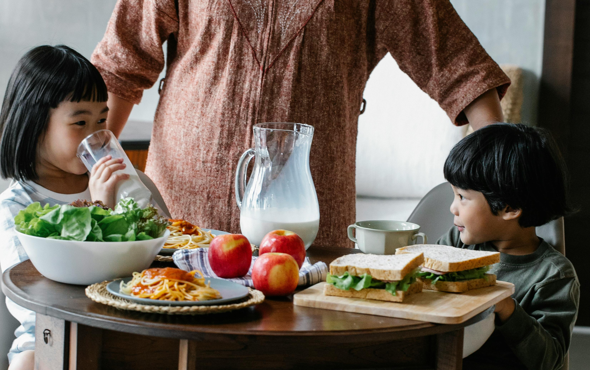
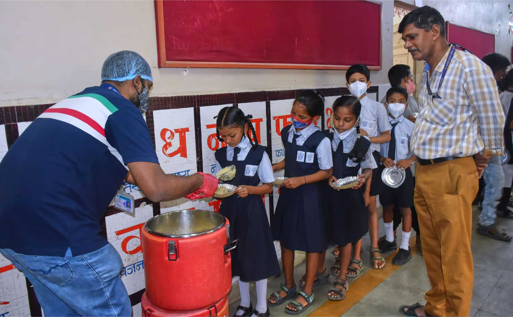
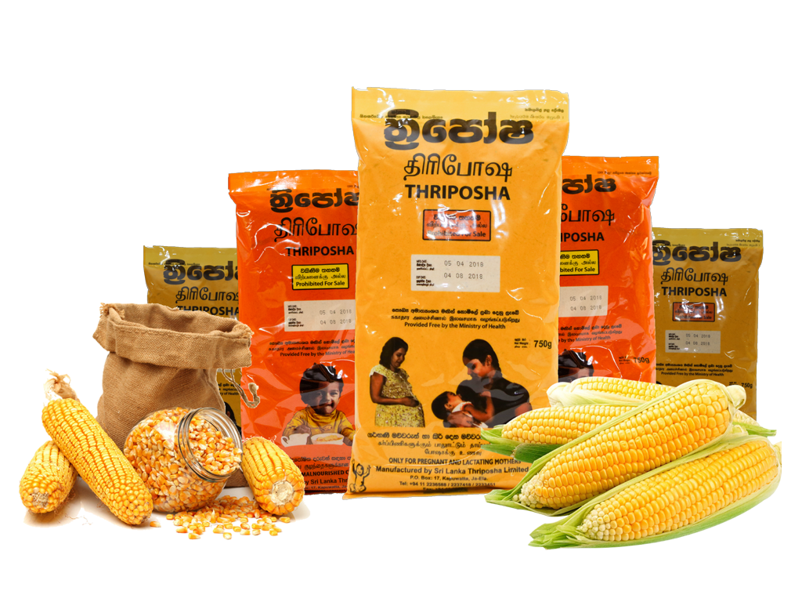

Child Nutrition and Health: Fueling the Future
Introduction
Proper nutrition during childhood is essential for physical growth, cognitive development, and a strong immune system. In many regions, malnutrition remains a leading cause of child mortality and long-term disability.
Why Nutrition Matters
Key nutrients such as proteins, vitamins, and iron play vital roles in a child's development. Malnutrition can lead to stunted growth, learning difficulties, and increased vulnerability to diseases.

Common Nutritional Issues in Children
- Stunting due to chronic undernutrition
- Micronutrient deficiencies such as vitamin A and iron
- Rising childhood obesity from low-nutrient, high-calorie foods
Successful Programs
Programs like school feeding initiatives and maternal-child health education campaigns by UNICEF and WHO have made measurable progress in reducing childhood hunger globally.
Sri Lanka Context
In Sri Lanka, despite improvements, undernutrition among children under five remains a concern in rural areas. Government and NGO efforts such as Thriposha distribution and school gardening projects are addressing the gap.
How We Can Help
- Volunteer in school nutrition programs
- Donate to child feeding initiatives
- Educate parents on balanced diets
- Promote and support home gardening
Conclusion
Good nutrition is a child's right, not a privilege. Let's work together to ensure every child has a healthy start.Thank you!